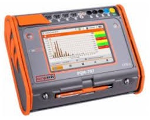
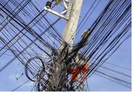

Titulo 01 del Informe
Titulo 02 del Informe
Punto de Conexión:
Equipo:
Fecha de Elaboración:
Elaboro por:
Revisado por:
Cliente Responsable:
Ciudad
Departamento
Año
Tabla de Contenido
1. MEDICIONES.
2. CONCEPTOS.
3. EQUIPO DE MEDIDA UTILIZADO.
4. CRITERIOS DE SEGURIDAD UTILIZADOS.
5. PUNTO DE MEDICIÓN.
4. CRITERIOS DE SEGURIDAD UTILIZADOS.
6. RESULTADO DE LAS MEDIDAS.
6.1 Regulación de tensión.
6.2 Desbalance de tensión.
6.3 Desequilibrio de corriente.
6.3.1 Gráfico de corrientes.
6.3.2 Distorsiones Armónicas (THD).
6.3.3 Distorsiones en Voltaje (TDDV).
6.3.4 Distorsiones en Corrientes (TDDI).
6.4 Factor de Potencia.
6.5 Frecuencia.
6.6 Potencias.
6.7 Cargabilidad.
6.8 Anomalías.
7. CONCLUSIONES.
1. MEDICIONES.
Contar con una energía de calidad permitirá minimizar las fallas de
alimentación eléctrica aumentando la confiabilidad y optimizando la productividad de las empresas.
Cuando se posee una infraestructura eléctrica que garantice una adecuada calidad de la potencia se
obtienen beneficios complementarios y que se cuenta con instalaciones seguras que minimizan riesgos
eléctricos para personas y equipos.
1.1 Registro de Parámetros Eléctricos.
- Frecuencia.
- Tensión (Voltaje).
- Corriente.
- Potencia (Estudio de Carga).
- Factor de Potencia.
- Desbalance de corriente y tensión.
- Distorsión armónica.
- Registros de ondas de tensión, corriente y potencia.
1.2 Normatividad.
- Norma IEEE 1159-1995, Recommended Practice for Monitoring Electric Power Quality.
- NormaIEEE519-1992,Recommended Practices and Requirements for Harmonic Control in Electrical Power Systems.
- 61000-2-5 Clasificación de los entornos electromagnéticos.
- 61000-2-1Descripcióndelosentornoselectromagnéticosensistemasdeenergíadebajatensión públicos.
- 61000-2-2 Niveles de compatibilidad en sistemas de energía de baja tensión públicos.
- 61000-2-4 Niveles de compatibilidad en instalaciones industriales.
- 61000-2-6 Evaluación de los niveles de emisión en instalaciones industriales.
- 61000-2-8 Huecos de tensión, interrupciones cortas.
- 6072.Impedancia de referencia para líneas de energía de baja tensión 61010.
- Cualquier equipo de medida eléctrico, los analizadores de redes trifásicos deben cumplir
con los requisitos de esta importante Norma Europea de seguridad.
2. CONCEPTOS.
CALIDAD DE ENERGÍA:
La calidad de la energía eléctrica (CEL), se define como la continuidad y confiabilidad del voltaje suministrada
a un cliente en particular por el operador de red o su sistema de generación en sitio (o ambos cuando hay sincronismo), así como
la calidad de la corriente de carga que el cliente demanda de este, de tal forma que se garantice la confiabilidad y eficiencia
operativa de un sistema de potencia eléctrico en particular.
La evaluación de indicadores de calidad de la energía permite conocer que tan inmune es una instalación a fenómenos perturbadores
de una óptima calidad de la energía, fenómenos en estado estable como armónicos de voltaje y corriente, variaciones de voltaje de corta
y larga duración según IEEE1159-1995 o en estado transitorio como variaciones rápidas de voltaje, transitorios de alto contenido energético,
etc. Mediante esta evaluación de indicadores actuales de la CEL, se logran estructurar las mejores soluciones técnicas que evitaran que la
instalación eléctrica se vea afectada por estos fenómenos, garantizando así la continuidad y confiabilidad de la operación de todos los equipos
eléctricos de la instalación.
Armónicos:
Son componentes sinusoidales de una onda periódica o cantidad que posee una frecuencia múltiplo de la frecuencia fundamental.
Distorsión armónica total(THD):
Es la relación entre el contenido armónico de la señal y la primera armónica o fundamental. Es el parámetro de medición de distorsión
más conocido por lo que es Recomendable para medir la distorsión en parámetros individuales (I y V).
Distorsión de demanda total(TDD):
Es la relación entre la corriente armónica y la demanda máxima de la corriente de carga
Factor de potencia:
Relación entre potencia activa y potencia aparente, del mismo sistema eléctrico o parte de él.
Frecuencia:
Número de períodos por segundo de uma onda. Se mide em Hertz o ciclos por segundo.
Potencia activa:
Potencia consumida por las bombillas, aparatos, artefactos y motores que se encuentran en el predio del usuario. Se mide en kilovatios [kW].
Potencia aparente:
Potencia resultante de la suma geométrica de la potencia activa y la potencia reactiva, medida en kVA.
Potencia reactiva:
Potencia absorbida por cargas reactivas que se encuentran en las industrias, transformadores, redes o por motores, medida en kVAR.
Potencia reactiva:
Potencia absorbida por cargas reactivas que se encuentran en las industrias, transformadores, redes o por motores, medida en kVAR.
Regulación de tensión:
La regulación de tensión es la caída de tensión en una red debido a la impedancia serie de los conductores la cual se opone al paso de la corriente eléctrica.
3.0 EQUIPO DE MEDIDA UTILIZADO.

Imagen 1. Analizador de redes METREL 2892 Utilizado en el diagnóstico.
Para la ejecución del diagnóstico de calidad de la energía eléctrica en el punto solicitado, se implementó un analizador de redes eléctricas:
- MI 2892.
- Con capacidad de detectar y registrar durante 15 días continuos en intervalos de 5 minutos y
100 muestras por ciclo, todas las perturbaciones que pueden afectar
la operación confiable de las instalaciones eléctricas.
- Para la medición, se utilizó un Analizador de Redes Trifásico que fue instalado durante un
periodo de 6 días continuos.
- Se obtuvieron los datos de todos los parámetros eléctricos incluyendo la potencia Activa,
Reactiva y Aparente;
y la energía total demandada por el sistema.
4.0 CRITERIOS DE SEGURIDAD UTILIZADOS.
Se tuvo en cuenta las respectivas medidas preventivas para realizar la instalación
del analizador
de red, se contó con la presencia de personal técnico especializado entrenado para
este tipo labor. Asimismo, se consideraron las normas y procedimientos de seguridad industrial, con
la finalidad de tener confiabilidad en el proceso de adquisición de datos y en la integridad física
del personal operativo.
5.0 PUNTO DE MEDICIÓN.

Imagen 2. Punto de Conexión.
6.0 RESULTADO DE LAS MEDIDAS.
El presente informe contiene los resultados del diagnóstico de Calidad de Potencia
realizado en la subestación eléctrica principal de:
- TRF 500KVA.
- PALOMINO - GUAJIRA
En la Tabla No.1 se presentan las fechas, horas e intervalos entre registros.
El equipo se programó para capturar los siguientes datos:
| Modelo |
Conexión |
Día de Inicio |
Hora de Inicio |
Día de Final |
Hora de Finalización |
Fase |
| 2892 |
3F-4H |
16/01/2023 |
11:30:00 a. m. |
23/01/2023 |
11:30:00 . Am. |
3 |
Tabla No.1.
Los resultados de las mediciones se presentan a continuación en forma de tablas y
resumen. Posteriormente, se realiza una descripción del comportamiento de los parámetros registrados.
También se presenta las diferentes curvas del comportamiento de los parámetros eléctricos en el
periodo de medición.
En la Tabla No.2, se puede observar los valores máximos, mínimos y promedio de los parámetros medidos.
Cabe resaltar que, los datos presentados en cada fila no son necesariamente coincidentes en el tiempo.
| Punto Medido |
Tensión [V] |
Corriente [A] |
Factor de Potencia |
Potencias |
|
V1 |
V2 |
V3 |
I1 |
I2 |
I3 |
COS (fi) |
P[kW] |
Q[kVA] |
S[kVA] |
| Valores |
Maximo |
495,17 |
494,39 |
504,42 |
94,63 |
94,23 |
94,39 |
0,92 |
57,05 |
61,23 |
65,82 |
| Minimo |
413,95 |
1 |
0.33 |
2 |
57 |
77 |
77 |
77 |
77 |
77 |
| Promedio |
449,20 |
25 |
0.75 |
13 |
57 |
77 |
77 |
77 |
77 |
77 |
Tabla No.2. Valores Máximos, Promedios y Mínimos de Parámetros Medidos.
Los valores máximos y mínimos registrados corresponden a valores medidos durante
el intervalo de las muestras.
6.1 Regulación de tensión.
En la Tabla No.3 se aprecia las variaciones de tensión con respecto al valor nominal.
| Acometida Principal |
Tensión Nominal |
Máximo V [%] |
Promedio V [%] |
Minimo V [%] |
| Trafo |
450 |
9.9 |
0.2 |
-6.5 |
Tabla No.3. Variaciones de tensión con respecto al valor nominal.
La Norma Técnica Colombiana NTC 1340 establece los límites máximos de variación de
tensión, siendo estos de: +10% y -10%.
Nota: Los valores se encuentran dentro de los límites establecidos.

Comportamiento de la variación de la tensión del sistema.
6.2 Desbalance de tensión.
Tendencia de tensiones.
| Desequilibrio de tensión [%] |
Norma: 2 % |
| Maximo |
Mínimo |
Mediana |
Promedio |
| 450 |
9.9 |
0.2 |
-6.5 |
Tabla No.4. Desbalances de tensión.
Tendencia Desequilibrio de tensión.
Otro parámetro de la Calidad de Tensión es el desbalance. Estos se calculan como:
La máxima diferencia entre las magnitudes de cada fase y el promedio de las fases, dividida sobre el
promedio y expresada en tanto por cien. La tabla No. 4 presenta el resumen de estos desbalances
registradas durante la medición.
El límite máximo admisible para desbalances en tensión es del 2%. Por lo tanto,
los desbalances registrados durante la medición:
- Si se encuentra dentro de los parametros recomendado por la Norma
6.3 Desequilibrio de corriente.
Tendencia de corriente.
| Desequilibrio de corrientes [%] |
Norma: 10 % |
| Maximo |
Mínimo |
Mediana |
Promedio |
| 454,64 |
3,66 |
44,36 |
40,52 |
Tabla No.5. Desbalances de corrientes.
El desequilibrio promedio de la corriente es de 40.52
Supera el límite establecido del (10%) que indica la Norma IEEE 1159-92. (No Cumple).
Tendencia Desequilibrio de corriente.
6.3.1 Gráfico de corrientes.
CORRIENTE L1
CORRIENTE L2
CORRIENTE L3
CORRIENTE N
6.3.2 Distorsiones Armónicas (THD).
| Armonicos en Tensión |
Norma: 5 % |
| U1 |
U2 |
U3 |
THDV Total |
| Máximo |
40,2 |
Máximo |
40,52 |
Máximo |
40,52 |
Máximo |
40,52 |
| Mínimo |
3,66 |
Mínimo |
40,52 |
Mínimo |
40,52 |
Mínimo |
40,52 |
| Mediana |
3,66 |
Mediana |
40,52 |
Mediana |
40,52 |
Mediana |
40,52 |
| Promedio |
3,66 |
Promedio |
40,52 |
Promedio |
40,52 |
Promedio |
40,52 |
Tabla No. 6. Distorsión Armónica.
La distorsión armónica es causada por la presencia de señales con
frecuencias múltiplo de la fundamental (60Hz), que se suman a la onda fundamental,
deformándola.
Las distorsiones armónicas se miden con los parámetros THDV en tensiones
y TDDI en corrientes. Estos indicadores se denominan Distorsiones Totales Armónicas.
El THD es la relación porcentual entre el contenido de distorsión armónica total y la
componente fundamental.
En corrientes, el THD se escala proporcionalmente a la
corriente nominal del transformador.
Este parámetro escalado se denomina TDD.
En la Tabla No.6 se presentan los niveles de distorsión armónica registrados tanto
en Tensión como en Corrientes durante las mediciones. A continuación, se presentará
una explicación de los indicadores y un análisis de los resultados.
El THD en tensiones es una medida del nivel de distorsión de la señal de tensión
(onda no sinusoidal pura) que entrega el operador de red en el punto de conexión
del cliente. En este caso es la señal que proviene de la Subestación Eléctrica o
punto Alimentador del Tablero en cuestión.
Los armónicos son la componente
sinusoidal de una onda periódica a una frecuencia múltiplo entero de la frecuencia
fundamental (60Hz). Los armónicos puedan causar sobrecalentamiento en conductores
afectando su nivel de aislamiento. En los devanados de los motores se puede originar
incrementos de temperatura generando ruido y oscilaciones de torque en el rotor lo
cual conduce a resonancias y vibraciones mecánicas. Sobre temperatura en capacitores
y en los casos más severos, riesgo de explosión debido a la rotura del dieléctrico.
Las pantallas electrónicas y la iluminación sufren intermitencias, interruptores
automáticos pueden presentarse disparos no deseados, fallo en computadores y falsas
lecturas de medidores.
Para identificar la carga que causa la distorsión,
la THD de corriente se debe medir a la entrada y en cada una de las salidas de los
diferentes circuitos. La THDI medida proporciona información sobre fenómenos observados
en una instalación:
- Un valor de THDI inferior al 10 % se considera normal. Prácticamente no existe
riesgo de funcionamiento anómalo en los equipos.
- Un valor de THDI comprendido entre el 10 y el 50 % revela una distorsión
armónica significativa. Existe el riesgo de que aumente la temperatura.
- Un valor de THDI superior al 50 % revela una distorsión armónica importante.
El funcionamiento anómalo de los equipos es probable. Un análisis profundo y
un sistema de atenuación son necesarios.
6.3.3 Distorsiones en Voltaje (TDDV).
La norma IEEE Std-519 limita al 5% el nivel de distorsión armónica en sistemas de
distribución con tensiones inferiores a 69kV.
El THD registrado en tensión durante los períodos de medición:
No superaron el máximo permitido por la norma en valor promedio.
6.3.4 Distorsiones en Corrientes (TDDI).
| Armonicos en Tensión |
Norma: 10-15 % |
| I1 |
I2 |
I3 |
THDI Total |
| Máximo |
40,2 |
Máximo |
40,52 |
Máximo |
40,52 |
Máximo |
40,52 |
| Mínimo |
3,66 |
Mínimo |
40,52 |
Mínimo |
40,52 |
Mínimo |
40,52 |
| Mediana |
3,66 |
Mediana |
40,52 |
Mediana |
40,52 |
Mediana |
40,52 |
| Promedio |
3,66 |
Promedio |
40,52 |
Promedio |
40,52 |
Promedio |
40,52 |
La distorsión armónica en corrientes es responsabilidad
del usuario y, por lo tanto, las normas limitan el máximo contenido de
distorsión armónica que un usuario puede entregar a la red.
El
parámetro de medición es el TDD y se calcula refiriendo el THDI a un
valor en por unidad, con base en la corriente máxima de carga.
De acuerdo con la norma IEEE 519-92, el límite máximo
de TDDI depende de la relación entre el nivel de cortocircuito en el punto
de conexión del usuario y la corriente máxima de carga. Este límite varía
entre 10% y 15%.
De acuerdo con la Tabla No.6 durante la medición
se presentaron valores de TDDI. Este valor:
Se encuentra dentro del rango permitido entre el 10 % y 15% por lo tanto,
cumple con lo establecido por la Norma IEEE 519-92.
6.4 Factor de Potencia.
Tendencia factor de Potencia.
El factor de potencia es un parámetro que indica el consumo
de energía reactiva, la cual se penaliza económicamente cuando sobrepasa el
límite del 50% de la energía activa consumida, establecido por la Resolución
CREG No. 082 del 2002. En el Punto de Medición el Factor de Potencia promedio es:
Se encuentra dentro de los parámetros estipulados por la norma, teniendo en
cuenta que el valor mínimo exigido es (cos = 0.90) y el máximo es (cos = 1.00).
| Factor de Potencia |
| Maximo |
Mínimo |
Mediana |
Promedio |
| 454,64 |
3,66 |
44,36 |
40,52 |
6.5 Frecuencia.
| Frecuencia del Sistema (Hz) |
| Limites |
Total |
Medida |
| Limite Superior |
3,66 |
44,36 |
| Limite Inferior |
3,66 |
44,36 |
De acuerdo con la Resolución CREG No. 025 de 1995, “La
frecuencia objetivo del SIN (Sistema Interconectado Nacional) es 60,00 Hz
y su rango de variación de operación está entre 59,80 y 60,20 Hz, excepto
en estados de emergencia, fallas, déficit energético y períodos de
restablecimiento”. Durante la medición, la frecuencia del sistema promedio
en períodos de 1 minutos estuvo entre 59,99 Hz. Es importante destacar que,
en Colombia, de acuerdo con la reglamentación vigente, el mantenimiento de
la frecuencia del sistema es responsabilidad de los generadores y no de los
distribuidores.
Los valores registrados se encuentran dentro del rango
establecido.
6.6 Potencias.
- Potencia Activa, Reactiva y Aparente
Potencia Activa (kW)
Potencia Reactiva (kvar)
Potencia Aparente Se (KVA)
| Maxima Potencia Kvar |
Maxima Potencia KW |
Maxima Potencia KVA |
| 3,66 |
3,66 |
44,36 |
| Minima Potencia Kvar |
Minima Potencia KW |
Minima Potencia KVA |
| 3,66 |
3,66 |
44,36 |
| Promedio Potencia Kvar |
Promedio Potencia KW |
Promedio Potencia KVA |
| 3,66 |
3,66 |
44,36 |
Los límites establecidos en la Resolución CREG 108 de 1997;
la cual dicta que la reactiva no debe superar el 50% de la activa.
7. Cargabilidad.
La cargabilidad promedio es igulal a: 3.64 %.
| Cargabilidad |
| Máximo |
3,66 |
% |
44,36 |
kVa |
| Mínimo |
3,66 |
% |
44,36 |
kVa |
| Promedio |
3,66 |
% |
44,36 |
kVa |